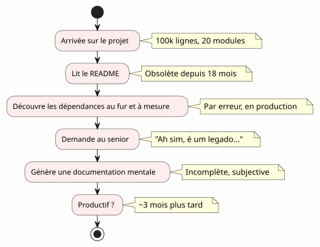
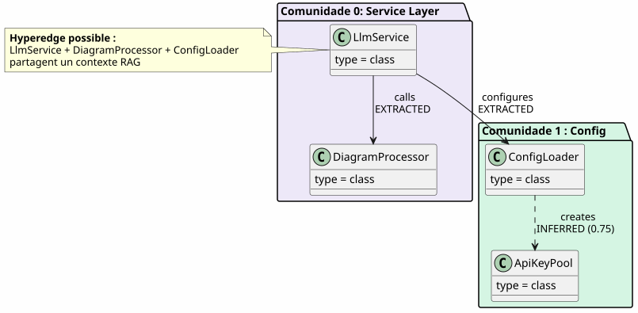
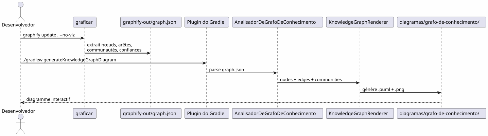
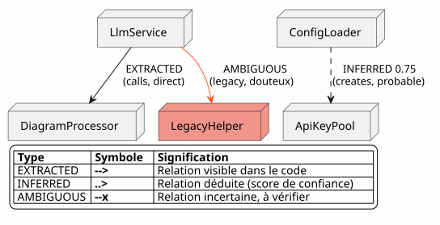
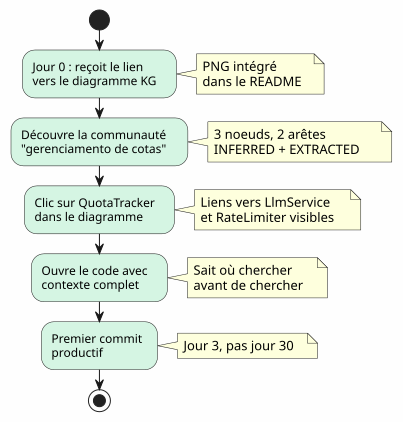

O Knowledge Graph como ferramenta de compreensão da base de código
Publié le 20 April 2027
- O muro do onboarding
- O que é um Knowledge Graph?
- Os 4 níveis de compreensão
- O contexto perdido: um cenário concreto
- Pipeline: do código sob demanda em um comando
- Tipos de arestas: o que a confiança diz
- 5 minutos para gerar seu próprio Knowledge Graph
- Valor para o onboarding : o cenário Anaïs revisado
- Valor para a navegação diária
- Limites e perspectivas
- Conclusão
Você chega a um projeto de 100 000 linhas. Vinte módulos, cem classes, dependências invisíveis, um histórico de refactorings esquecidos. O README promete uma arquitetura 'microservices' mas o código conta outra história. Quanto tempo para ser produtivo?Três meses— se você tiver sorte. E se um mapa interativo do código, gerado automaticamente, pudesse reduzir isso a três dias ?
- toc
-
[]
O muro do onboarding
Todo desenvolvedor já viveu essa cena :
-
Dia 1: mostramos o README (última atualização: há 18 meses)
-
Dia 3: você descobre que o módulo`billing`chama secretamente o módulo`notification`
-
Dia 7 : um sênior lhe diz 'Ah sim, esta classe na verdade faz duas coisas, tínhamos previsto dividi-la'
-
Dia 14: você percebe que toda a inteligência de negócios está em`utils/LegacyHelper.java`— um arquivo que não é referenciado em nenhum lugar

O problema não é a falta de documentação — é ofalta de cartão. Um mapa que mostra o território real, não o território imaginário do último redesign.
O que é um Knowledge Graph?
Um Knowledge Graph é uma representação estruturada dosaberConteúdo na sua base de código:
| Entidade | Exemplo no código | Papel no grafo |
|---|---|---|
nó |
Classe, função, conceito |
Vértice do grafo |
aresta |
Chamada, herança, importação |
Ligação entre dois nós |
Comunidade |
Grupo de classes relacionadas |
Cluster visual |
Tipo de aresta |
EXTRAÍDO, INFERIDO, AMBÍGUO |
Confiança na relação |
Pontuação de confiança |
0.0 à 1.0 |
Fiabilidade de uma aresta INFERRED |
hiperaresta |
Relação 3+ nós |
Complexidade arquitetural |

A diferença com um diagrama UML simples?Um diagrama UML mostra o que o desenvolvedor decidiu mostrar. Um Knowledge Graph mostra o que realmente está lá, incluindo as dependências ocultas e os conceitos emergentes.
Os 4 níveis de compreensão
Um Knowledge Graph permite navegar aquatro escalas:
| Nível | pergunta | granularidade | Ferramenta |
|---|---|---|---|
1 — Classe |
O que esta classe faz ? |
Linha de código |
IDE, navegador |
2 — Módulo |
Quais são os arquivos deste módulo? |
Dossiê |
|
3 — Comunidade |
Quais conceitos trabalham juntos? |
Grupo vinculado |
Knowledge Graph |
4 — Sistema |
Como tudo se articula? |
Arquitetura global |
Diagrama KG completo |
Sem Knowledge Graph, os níveis 3 e 4 sãoinacessíveis— ou, pelo menos, subjetivos e obsoletos.
O contexto perdido: um cenário concreto
Imagine um novo desenvolvedor, Anaïs, que chega ao projeto. Ela deve adicionar uma funcionalidade de "quota tracking" para as chamadas LLM.
Failed to generate image: PlantUML preprocessing failed: [From <input> (line 19) ]
@startuml
skinparam backgroundColor #FEFEFE
skinparam componentStyle rectangle
actor "Anaïs (nova)" as ana
rectangle "O que ela procura" {
[QuotaTracker] as qt
[ApiKeyPool] as akp
[RateLimiter] as rl
}
rectangle "O que ela encontra" {
[LlmService] as ls
[ConfigLoader] as cl
}
ana --> ls : "Procure 'quota'
na IDE"
^^^^^
Syntax Error? (Assumed diagram type: component)
@startuml
skinparam backgroundColor #FEFEFE
skinparam componentStyle rectangle
actor "Anaïs (nova)" as ana
rectangle "O que ela procura" {
[QuotaTracker] as qt
[ApiKeyPool] as akp
[RateLimiter] as rl
}
rectangle "O que ela encontra" {
[LlmService] as ls
[ConfigLoader] as cl
}
ana --> ls : "Procure 'quota'
na IDE"
ls --> cl : "Encontre ConfigLoader
(mencione 'quota'
em um comentário)"
cl --> qt : "3 semanas depois :
descobre QuotaTracker
já existe"
note right of qt
**Contexte perdu :**
QuotaTracker était dans
un module non-référencé
dans le README
end note
@enduml
Com um Knowledge Graph, Anaïs teria visto em5 minutos:
-
QuotaTracker`está ligado a`ApiKeyPool(cristaextraído) -
RateLimiter`est ligado a`QuotaTracker(arestainferido, confiança 0.82) -
Estes três nós formam umacomunidadeGestão de Cotas
-
Um hiperaresta também conecta`LlmService`— o ponto de entrada
Pipeline: do código sob demanda em um comando
O pipeline Graphify + Plugin Gradle transforma sua base de código em um diagrama PlantUML emdois comandos:

Zero LLM.Tudo é determinístico: mesmo código, mesmo gráfico, mesmo diagrama. Reprodutível, versionável, consultável offline.
Tipos de arestas: o que a confiança diz

Os tipos de arestas são cruciais para o onboarding:
-
extraído: tu podes navegar tranquilamente — está no código
-
INFERRED(0.6-0.8) : provavelmente correto, mas verifica antes de refatorar
-
infere(0.8+) : muito confiável — use-o como referência
-
ambíguo: atenção, ponto sensível.
5 minutos para gerar seu próprio Knowledge Graph

# 1. Installer graphify
pip install graphify==0.4.29
# 2. Générer le Knowledge Graph
graphify update . --no-viz
# 3. Vérifier le JSON
cat graphify-out/graph.json | jq '.nodes | length'
# → 47 nœuds
# 4. Générer le diagramme
./gradlew generateKnowledgeGraphDiagram
# 5. Filtrer par communauté
./gradlew generateKnowledgeGraphDiagram -Pplantuml.kg.community="service layer"
# 6. Limiter la taille
./gradlew generateKnowledgeGraphDiagram -Pplantuml.kg.maxNodes=20Valor para o onboarding : o cenário Anaïs revisado
Com o Knowledge Graph, o cenário de Anaís muda radicalmente :

O Knowledge Graph não substitui a IDE— ele o completa. O IDE mostra onde ; o KG eleva por que e como isso se articula.
Valor para a navegação diária
O onboarding não é o único caso de uso. Para um desenvolvedor sênior, o Knowledge Graph serve para:
Failed to generate image: PlantUML preprocessing failed: [From <input> (line 10) ]
@startuml
skinparam backgroundColor #FEFEFE
skinparam usecaseStyle roundrectangle
left to right direction
actor "Desenvolvedor" as dev
usecase "Refatoração" as ref
usecase "Revista
^^^^^
Syntax Error? (Assumed diagram type: component)
@startuml
skinparam backgroundColor #FEFEFE
skinparam usecaseStyle roundrectangle
left to right direction
actor "Desenvolvedor" as dev
usecase "Refatoração" as ref
usecase "Revista
de Arquitetura" as rev
usecase "Debug
dependências" as dbg
usecase "integração" as onb
usecase "Documentação
autogerada" as doc
dev --> ref
dev --> rev
dev --> dbg
dev --> onb
dev --> doc
ref --> ("Identifier
os pontos quentes") : hyperedges\ndensité d'arêtes
rev --> ("Verificar
as fronteiras") : AMBIGUOUS\naux limites
dbg --> ("Rastrear
as chamadas") : EXTRACTED\nchaîne de calls
onb --> ("Explorar\nas comunidades") : filtres\npar cluster
doc --> ("Gerar
os diagramas") : ./gradlew\ngenerateKnowledgeGraphDiagram
@enduml
| Caso de uso | Como o KG ajuda | Exemplo concreto |
|---|---|---|
refatoração |
Visualiza os hyperedges (ligações 3+) |
Estas 5 classes estão sempre ligadas—extrai um módulo |
Revisão de arquitetura |
Detecta os AMBIGUOUS nas fronteiras |
O chamado entre billing e notification é incerto |
Depurar |
Traça a cadeia EXTRACTED |
Por que o LLMService chama o LegacyHelper ? |
integração |
Explore as comunidades por filtro |
O que é o 'service layer'? |
Documentação |
Gere os diagramas na CI |
README sempre atualizado |
Limites e perspectivas
Um Knowledge Graph não é uma varinha mágica :
| Limite | Explicação | Contorno |
|---|---|---|
Código estático apenas |
Sem runtime, sem fluxo de dados |
Completar com traces APM |
INFERRED pode estar falso |
As arestas deduzidas necessitam de validação |
Pontuação de confiança + revisão humana |
Sem semântica de negócio |
O KG sabe "LlmService appelle ConfigLoader", não "c’est le point d’entrée auth |
Anotações manuais ou pós-processamento de LLM |
Sem temporalidade |
Uma captura do código, não sua evolução |
Gerar regularmente + comparar as versões |
Perspectivas:
-
Diferença KG: comparar duas versões para ver os deslocamentos das comunidades
-
KG interativo: clicar em um nó → abrir IDE na linha correspondente
-
KG históricovisualizar a evolução das comunidades ao longo do tempo (dívida técnica que migra)
Conclusão
O Knowledge Graph transforma um atosolitário e longo(compreender uma base de código) em um actocompartilhado e rápido(consultar um mapa).
Não é documentação — é decartografia. Um mapa que se atualiza automaticamente, que mostra o território real e que permite a cada desenvolvedor, novo ou sênior, navegar com confiança.
pip install graphify==0.4.29
graphify update . --no-viz
./gradlew generateKnowledgeGraphDiagram3 comandos. 5 minutos. Um mapa do seu código.